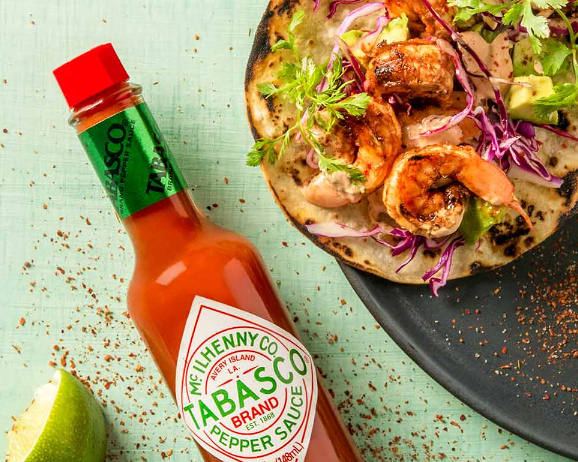

The sun dipped below the Golden Gate Bridge, casting a warm glow on our picnic table at Crissy Field. I grabbed the petite bottle with its distinctive diamond label. A few drops of Tabasco onto the sizzling patties worked like magic, releasing a spicy aroma that wafted through the air. The tangy burgers were a perfect beachside treat. The zesty and peppery kick elevated the smoky char of the burgers, leaving a lingering heat that danced on my palate without overwhelming the burger. The combination of the rich, savory meat and the vibrant punch of Tabasco was perfect.
Tabasco is a reliable sidekick in the hot sauce pantry as perhaps the most common staple. The first time I’m trying to add heat to a dish, I’ll start with a couple of dashes of Tabasco. From eggs to veggies to burgers to pizza, it’s a true winner for its universal appeal. It's not for heat connoisseurs who want a blast, but its moderate spiciness and balanced acidity make it a crowd-pleaser. Consider adding a few dashes (or substituting it for salt) in soups, stews, grilled meats, and avocado toast, and don’t forget to enjoy it with the occasional bloody mary!
Recipes: https://www.tabasco.com/recipe/